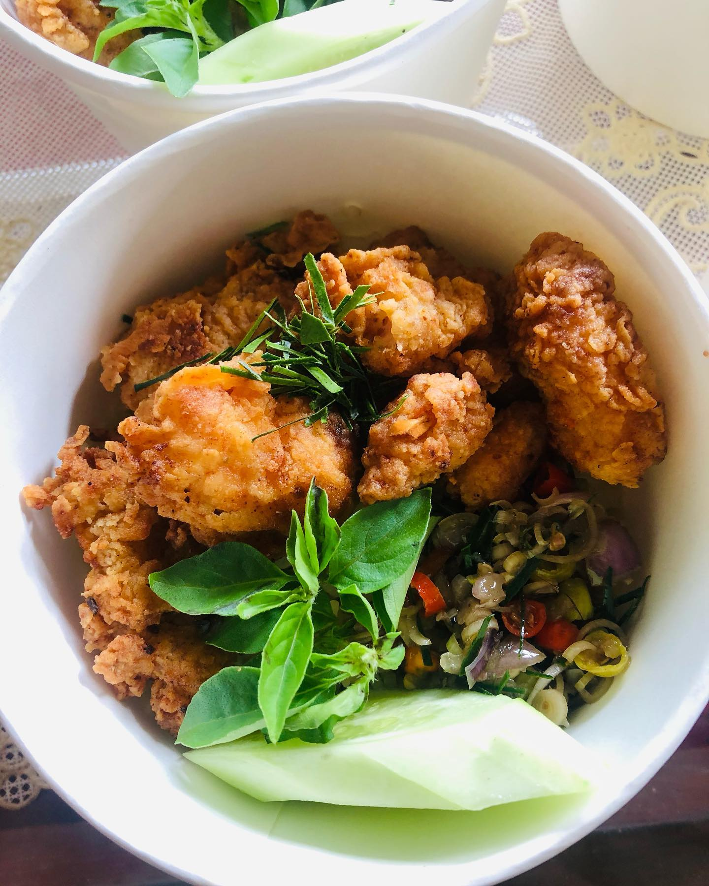
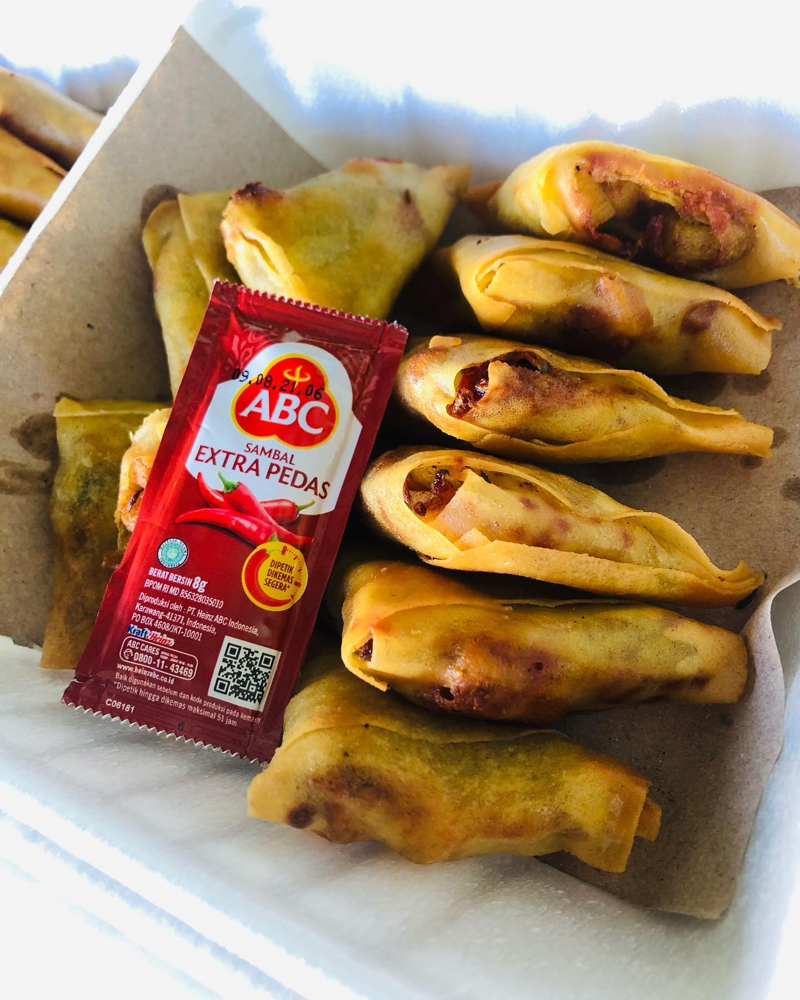
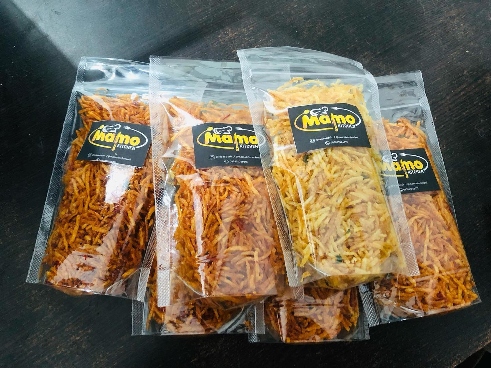
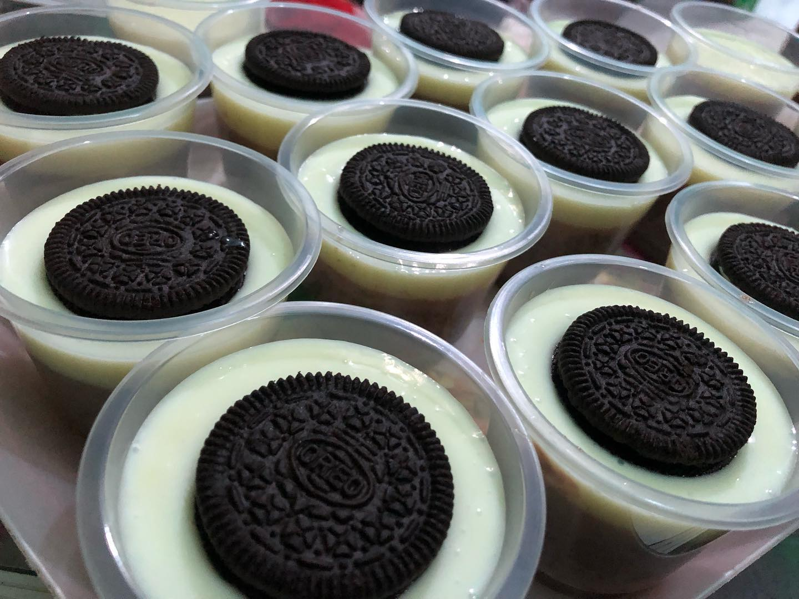

Menu pertama yang disediakan oleh Mamo Kitchen yaitu Nasi Ayam Daun Jeruk. Jika kamu suka yang berbumbu-bumbu, menu ini untukmu! Nasi dengan wangi daun jeruk, ayam yang berempah bersama sambal matah yang meledak dimulut, langsung deh buat mata melek! Oh, jangan lupa dong refreshments yang dibarengi menu ini, tak lupa dengan timun, tomat, dan selada biar ada seger-segernya gitu! Jangan berpikir dua kali deh kalau mau pesen menu ini, dijamin maknyuuus!!
Menu

Nasi Ayam Daun Jeruk
Nasi Ayam Daun Jeruk
Harga: Rp. 20.000,00

Samosa
Samosa
Harga: Rp. 20.000,00
Menu kedua ini juga cocok banget bagi kalian suka makanan berat atau snack yang berempah banget rasanya. Kulit lumpia yang berisi gabungan ayam suwir, sayur-sayuran yang berbumbu curry dan isinya gak pelit-pelit dong! Pokoknya gak nyesel deh pesen menu ini!

Kentang Mustofa
Kentang Mustofa
Harga: Rp. 10.000,00
Menu ini termasuk snack juga nih, tidak lupa dengan rasa yang mantapp bumbu nya dan kentang nya yang krenyeess banget dimulut. Kemungkinan besar kalian bakal ketagihan sih kalau pesan menu ini. Variasi nya juga ada lho! Rasa original yang udah enak banget, apalagi rasa pedes yang ditambahkan pedes cabai yang buat rasanya makin nendangg dimulut. Fix dijamin bakal ketagihan terus deh!

Pudding
Pudding
Harga: Rp. 8.000,00
Nah, menu-menu sebelumnya kan penuh bumbu yang berempah banget. Menu ini kebalikannya nih, maniis banget kayak yang lagi baca ini. Yaiya dong, masa pudding rasanya rempah-rempah, gamungkin kann? Anyway, pudding ini punya banyak varian lho! Selain coklat, ada juga rasa mangga, alpukat, dan banyak lagi dehh. Tentu saja rasanya ga jauh beda dong, rasanya pasti manis tapi gak terlalu manis, creamy banget sampai meleleh dimulut, melelehnya kayak liat kamu yang manis gitu lhoo. Pokok enak banget deh pudding buatan Mamo Kitchen, sebagai pencuci mulut dan snack juga pasti ga bakal nyesel deh!